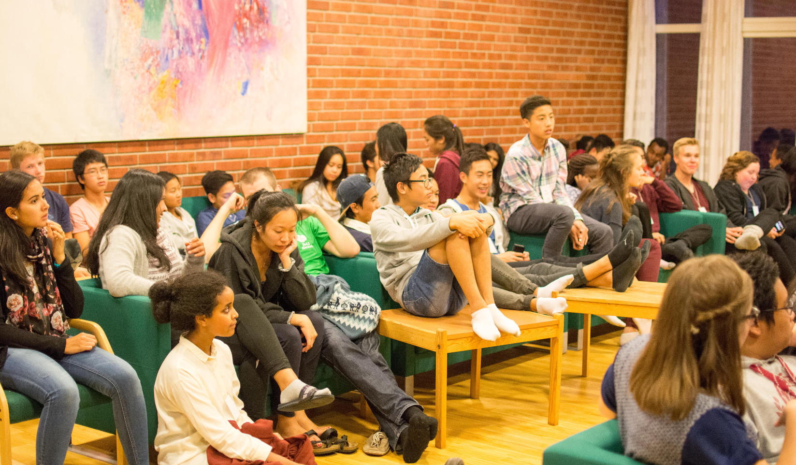

De ulike kursene i ledertrening
Kurs 1: Intro
En introduksjon til ledertreningen i NUK. En ny erfaring av troen, gjennom samtale, spørsmål og svar. En opplevelse av fellesskapet gjennom arbeid mot et felles mål.
Et kurs som utfordrer deg. Et kurs hvor vil oppleve godt fellesskap, nye venner og morsomme ting.
Kurs 2: Bibelen
En introduksjon til Bibelen. Få overblikket. Forstå hvorfor og hvordan den ble skrevet.
Et kurs hvor du får være med "å skrape i overflaten", hvor du får lære om forskjellen på intelligens og visdom og hvor du finner ut mer om Guds åpenbaring og frelsesplan.
Kurs 3: Kirken
Trenger vi Kirken for å være kristne? Hva er Kirken og hva gjør Kirken? Hvem er Kirken? Har Kirken noe å si for meg i mitt liv? Er det rom i Kirken for at jeg kan tenke selv?
Et kurs som søker å skjerpe bevisstheten omkring Kirkens vesen og liv slik at både spørsmålene og svarene blir mer relevante, og slik at kirketilhørigheten og kjærligheten til Kirken blir viktig og levende i mitt liv.
Kurs 4: Samarbeid og ledelse
Jeg - og vi. Hva er poenget med å samarbeide? Jeg - en leder?!
Et kurs som vil gi deg kompetanse og redskaper til å være leder i menighetens ungdomsarbeid. Et kurs som vil gi deg nye tanker om deg selv i en gruppe. Et kurs som gir deg nyttige erfaringer om samarbeid mellom mennesker. Et kurs hvor du vil lære mer om å drive et lokallag i NUK.
Praksis i menigheten
Som en del av ledertreningsopplegget i NUK inngår en praksis i din egen menighet. Dette vil avtales individuelt med hver enkelt deltaker og deres menighet. Du vil få mer informasjon om dette når du deltar på kurs på Høstsamling og Vårsamling. Oppgaver som kan være aktuelle, er: oppgaver i barne- og ungdomsarbeid, assistent i katekesen, hjelpe til med kirkekaffe, hjelpe til med Evangelieforklaring, lesninger under Messen o.a.
Adventsaksjonen
Adventsaksjonen er NUKs årlige samarbeidsaksjon med Caritas Norge, og vår årlige innsats for rettferdighet i verden. Som katolikker er vi forpliktet til å være på de fattiges side, og vi er forpliktet til bry oss om vår neste. Derfor er deltakelse i Adventsaksjonen i din egen menighet en naturlig del av ledertreningen i NUK. Du vil få mer informasjon om dette når du deltar på kurs på Høstsamling og Vårsamling.